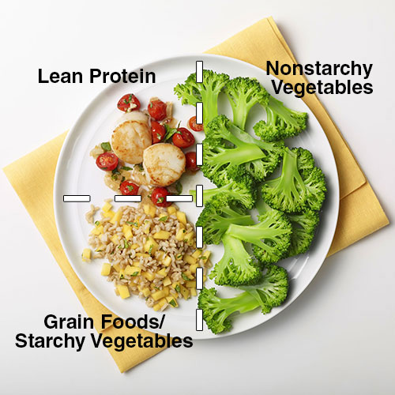

DIET AND NUTRITION - Managing diabetes and Hypertension through nutrition
Nutrition is an important part of a healthy lifestyle when you have diabetes and hypertension. What you choose to eat, how much you eat, and when you eat are all important in keeping your blood glucose level in the range that your health care team recommends.
WHAT DO I EAT IF I HAVE DIABETES AND HYPERTENSION?
You may worry that having diabetes and hypertension means going without foods you enjoy. The good news is that you can still eat your favorite foods, but you might need to eat smaller portions or enjoy them less often.
Your health care team will help create a diabetes meal plan for you that meets your needs and likes.
The key to eating with diabetes is to eat a variety of healthy foods from all food groups, in the amounts your meal plan outlines.
The food groups are:
- Vegetables
- Non starchy: includes broccoli, carrots, greens, peppers, and tomatoes
- Starchy: includes potatoes, corn, and green peas
- Grains - At least half of your grains for the day should be whole grains.
- Includes wheat, rice, oats, cornmeal, barley and qunoa. Examples are bread, pasta, cereal and tortillas
- Protein
- Lean meat
- Chicken or turkey without the skin
- Fish
- Eggs
- Nuts and peanuts
- Dried beans and certain peas such as chick peas and split peas
- Meat substitutes such as tofu
- Diary - non fat or low fat
- Milk or lactose free milk if you're lactose intolerant
- Yogurt
- Cheese
- Fruits - Includes oranges, melon, berries, apples, bananas and grapes
Eat foods with heart healthy fats, which can be gotten from :
- Oils that are liquid at room temperature, such as canola and olive oil
- Nuts and seeds
- Heart healthy fish such as salmon, tuna, and mackerel
- Avocado
Use oils when cooking food instead of butter, cream, shortening, lard, or stick margarine. Choose healthy fats such as from nuts, seeds and olive oil.
FOOD AND DRINKS TO BE LIMITED
Foods and drinks to limit include:
- Fried foods and other foods high in saturated fat and trans fat
- Foods high in salt, also called sodium
- Sweets such as baked goods, candy, and ice cream
- Beverages with added sugars such as juice, regular soda, and regular sports or energy drinks
If you drink alcohol, drink moderately. No more than one drink a day if you’re a woman or two drinks a day if you’re a man.
If you use insulin or diabetes medicines that increase the amount of insulin your body makes, alcohol can make your blood glucose level drop too low.
This is especially true if you haven’t eaten in a while. It’s best to eat some food when you drink alcohol.
WHEN TO EAT
Some people with diabetes need to eat at about the same time each day.
Others can be more flexible with the timing of their meals. Depending on your diabetes medicines or type of insulin, you may need to eat the same amount of carbohydrates at the same time each day.
If you take “mealtime” insulin, your eating schedule can be more flexible.
If you use certain diabetes medicines or insulin and you skip or delay a meal, your blood glucose level can drop too low. Ask your health care team when you should eat and whether you should eat before and after physical activity.
FOOD QUANTITY INTAKE
Eating the right amount of food will also help you in managing your blood glucose level and your weight.
Your health care team can help you figure out how much food and how many calories you should eat daily.
Look up how many calories are in what you eat and drink with our Calorie Calculator

WEIGHT LOSS PLAN
If you are overweight or obese, work with your health care team to create a weight-loss plan.
You can find out if you're overweight or obese with our BMI Calculator
To lose weight, you need to eat fewer calories and replace less healthy foods with foods lower in calories, fat, and sugar.
MEAL PLANNING METHODS
Two common ways to help you plan how much to eat if you have diabetes are the plate method and carbohydrate counting, also called carb counting.
Make sure you check with your health care team about the method that’s best for you.
THE PLATE METHOD
The plate method helps you control your portion sizes. You don’t need to count calories. The plate method shows the amount of each food group you should eat. This method works best for lunch and dinner.
Use a 9-inch plate. Put non starchy vegetables on half of the plate, meat or other protein on one-fourth of the plate and grains or other starch on the last one-fourth.
Starches include starchy vegetables such as corn and peas. You also may eat a small bowl of fruit or a piece of fruit, and drink a small glass of milk as included in your meal plan.

Your daily eating plan also may include small snacks between meals.
PORTION SIZES
- You can use everyday objects or your hand to judge the size of a portion.
- 1 serving of meat or poultry is the palm of your hand or a deck of cards
- 1 3-ounce serving of fish is a checkbook
- 1 serving of cheese is six dice
- 1/2 cup of cooked rice or pasta is a rounded handful or a tennis ball
- 1 serving of a pancake or waffle is a DVD
- 2 tablespoons of peanut butter is a ping-pong ball
CARBOHYDRATE COUNTING
Carbohydrate counting involves keeping track of the amount of carbohydrates you eat and drink each day.
Because carbohydrates turn into glucose in your body, they affect your blood glucose level more than other foods do.
Carb counting can help you manage your blood glucose level. If you take insulin, counting carbohydrates can help you know how much insulin to take.
The right amount of carbohydrates varies by how you manage your diabetes, including how physically active you are and what medicines you take, if any.
Your health care team can help you create a personal eating plan based on carbohydrate counting.
The amount of carbohydrates in foods is measured in grams. To count carbohydrate grams in what you eat, you’ll need to:
- Learn which foods have carbohydrates
- Learn to estimate the number of grams of carbohydrate in the foods you eat
- Add the grams of carbohydrate from each food you eat to get your total for each meal and for the day
Instead, eat carbohydrates from fruit, vegetables, whole grains, beans, and low-fat or nonfat milk. Choose healthy carbohydrates, such as fruit, vegetables, whole grains, beans, and low-fat milk, as part of your diabetes meal plan.